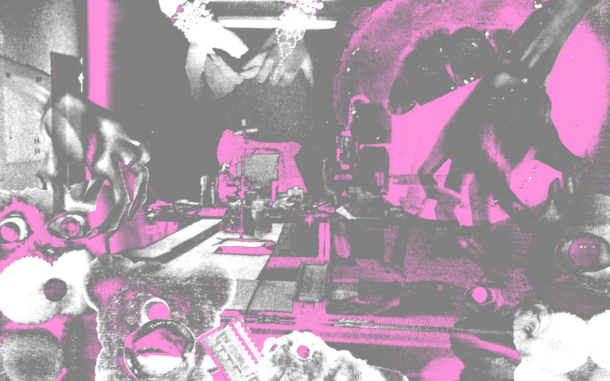
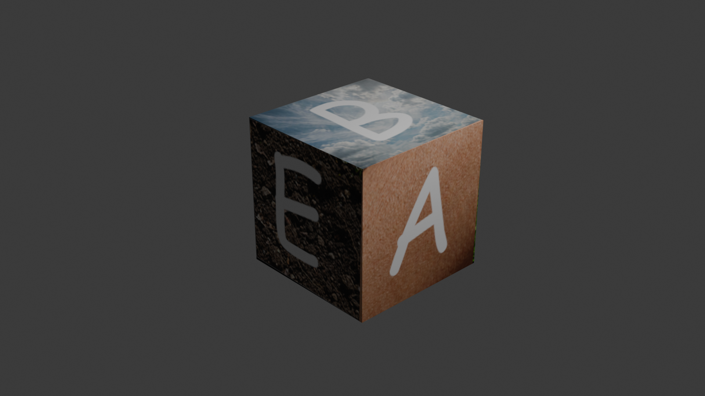

☰
natalie churchill
10c coursework archive ෧ f26
⋆*✩ central portal
⋆*✩ archive // page 2
semester projects:
♡ project 01: uncanny valley
[online]
↳ ⋆*✩ final pdf document ↗
♡ project 02: quasi-object
[in progress]
♡ project 03
[locked]
outlinks:
github repo ↗
profile ↗
@}->--
natalie churchill
// 10c f26
♥
latest git update:
october 2026

project 01 // click to inspect ⤸

project 02 // click to inspect ⤸
project 03 // click to inspect ⤸
♥
01: uncanny valley
♡
02: quasi-object
෧
03: [locked]
⋆*✩ enter archive // page 2 ↗
♥ natalie // 10c
♫
◌
 project 03 // click to inspect ⤸
project 03 // click to inspect ⤸
project 03 // click to inspect ⤸
project 03 // click to inspect ⤸